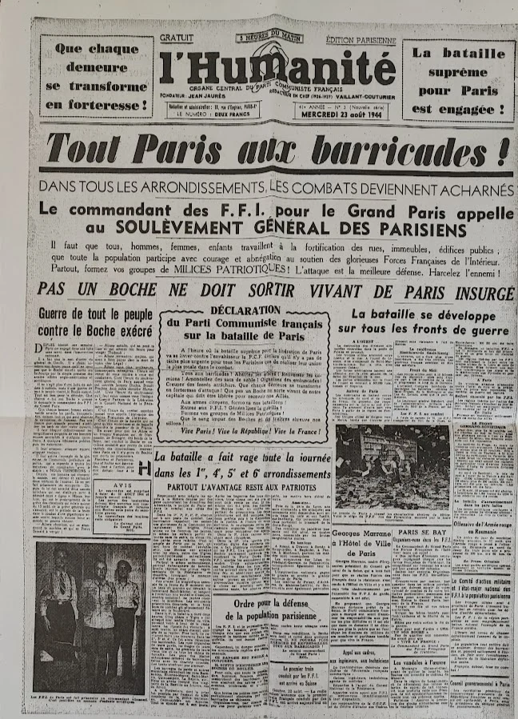

Commémoration
Août 1944. Nous commémorons la Libération de Paris
Date indiquée par Facebook · 26 août 2024
Repères éditoriaux
Pour le 80e anniversaire de la Libération de Paris, nous avons relayé une une de L’Humanité publiée au moment de l’insurrection et la mémoire de la Résistance.
Texte conservé avec la publication
19 - 25 août 1944
Il y a quatre-vingts ans, le peuple libérait la capitale sous la direction de la Résistance.

Sources
Archive rouge · export Facebook · AR-0002-FB-01306
À lire aussi · L'élan de la Libération de Paris